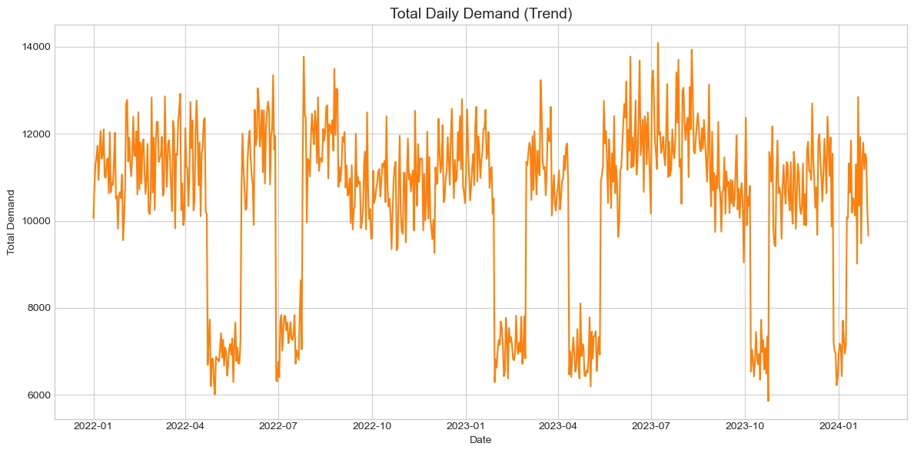
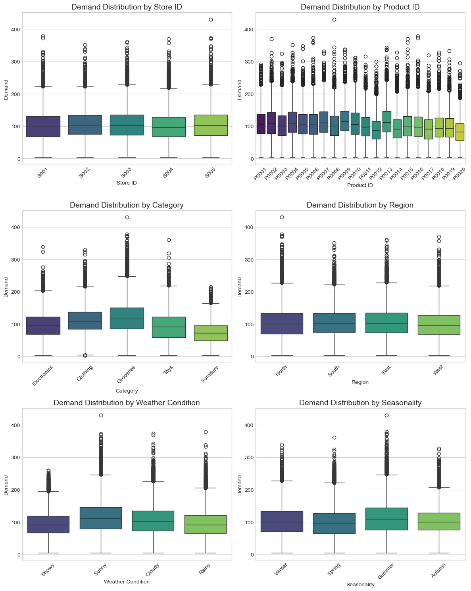
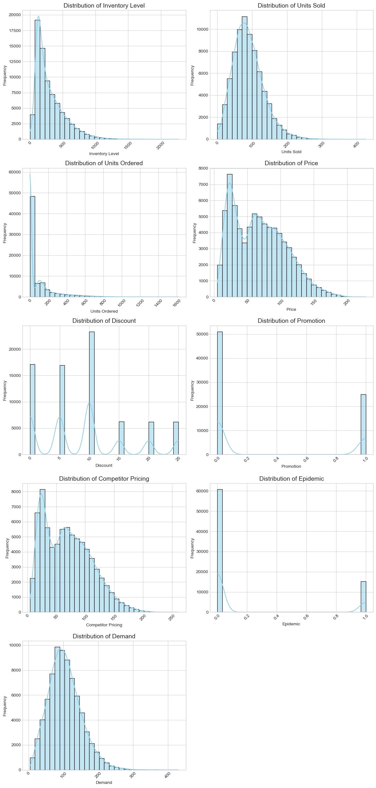
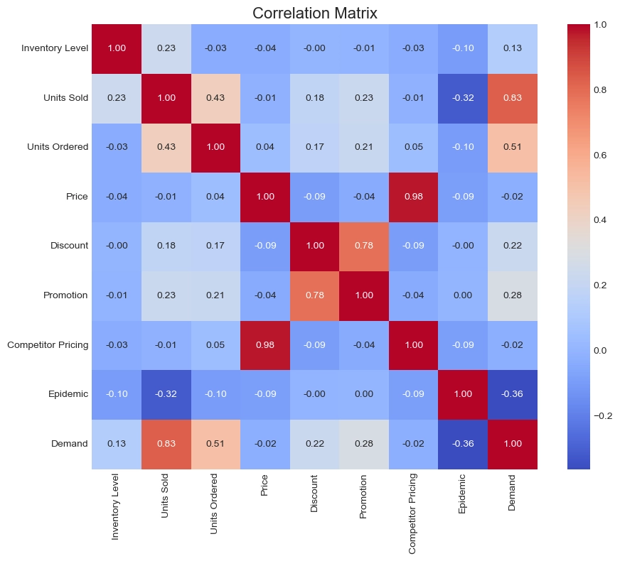
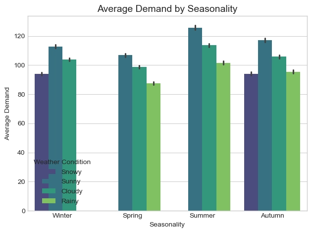
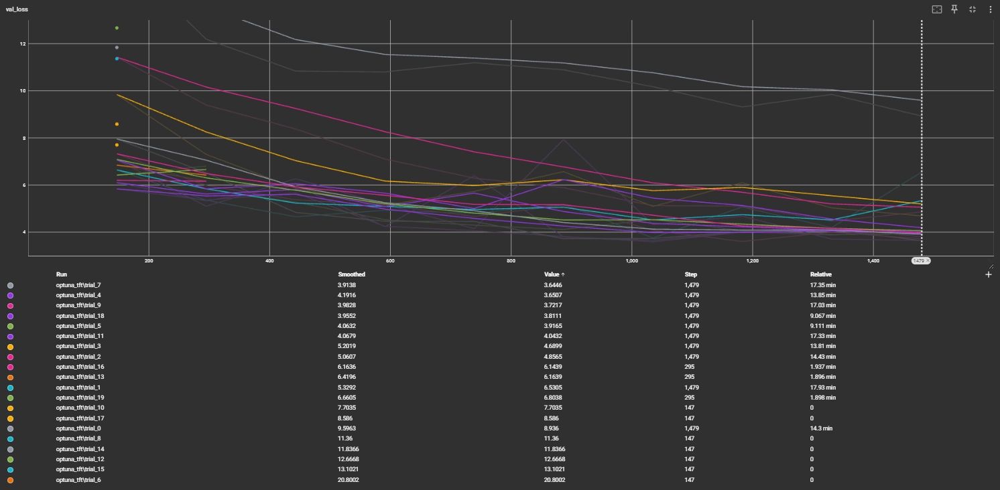
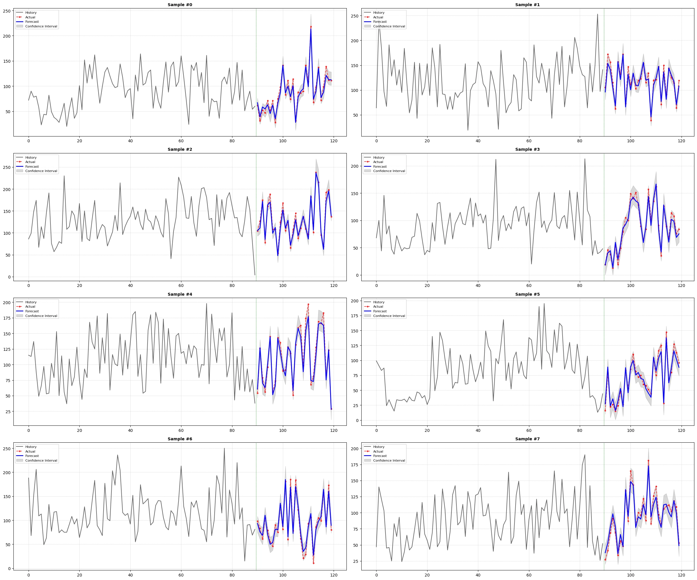
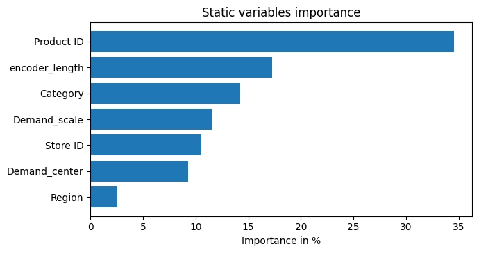
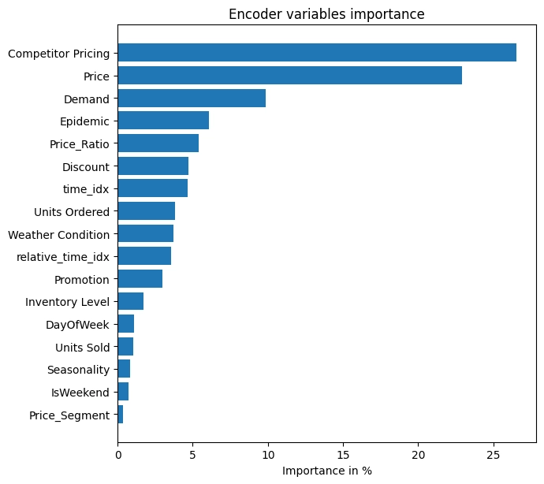
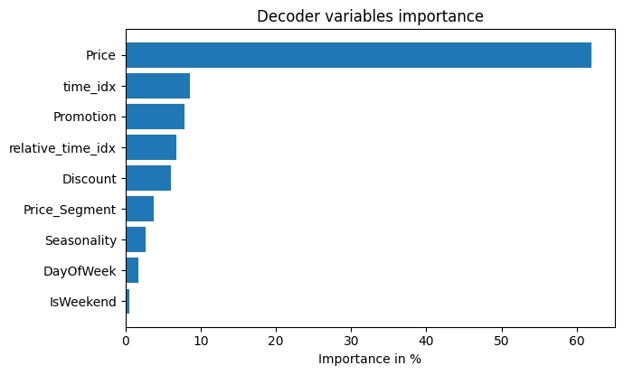

Project Report
Retail Store Inventory and Demand Forecasting
1. 프로젝트 개요
1.1. 문제 정의 및 목표
본 프로젝트는 소매 기업의 재고 관리 효율성을 극대화하기 위해, 2년 치의 과거 판매 데이터와 프로모션, 날씨 등 다양한 내·외부 요인을 분석하여 미래 수요를 예측하는 다중 시점 시계열 회귀(Multi-Horizon Time-Series Regression) 문제로 정의된다. 현재 많은 소매 기업은 직관에 의존한 부정확한 예측으로 인해, 고객이 원할 때 제품이 없는 재고 부족에 따른 기회비용 발생이나, 팔리지 않는 과잉 재고로 인한 보관 비용 증가라는 어려움을 겪고 있다. 이에 딥러닝 기반의 자동화된 수요 예측 모델을 구축하여 30일 간의 단기 수요를 정교하게 파악하고, 이를 통해 재고 최적화를 실현함으로써 연간 약 50만 달러 규모의 재고 관리 비용 절감을 달성하는 것을 최종 목표로 한다.
1.2. 평가 지표
본 프로젝트는 예측 결과의 직관적인 해석 용이성과 모델의 안정성을 동시에 확보하기 위해 MAPE와 RMSE를 성과 지표로 선정하였다. 우선, 비즈니스 의사결정권자가 예측 오차의 규모를 직관적으로 파악할 수 있도록 MAPE를 활용하며, 단기 예측 구간에서 오차율을 10% 미만으로 유지하는 것을 목표로 한다. 이와 동시에, 재고 관리에 치명적인 영향을 줄 수 있는 대규모 예측 실패를 방지하기 위해, 큰 오차에 더 높은 페널티를 부여하는 RMSE를 보조 지표로 활용하여 기존 기준 모델(7일 전 수요) 대비 15% 이상의 성능 개선을 검증한다. 더 나아가 단순한 점 추정을 넘어 95% 신뢰 구간 기반의 예측 범위를 함께 제공함으로써, 수요의 불확실성을 정량화하고 안전 재고 산정의 신뢰도를 높이는 데 기여하고자 한다.
2. 데이터 개요
2.1. 데이터 출처 및 구조
본 프로젝트는 소매점의 실제 비즈니스 환경을 반영한 수요 예측 데이터셋을 활용한다. 해당 데이터는 약 2년 동안 축적된 일별 판매 기록을 기반으로 하며, 총 76,000행의 시계열(Time-Series) 데이터로 구성되어 있다. 모델이 학습해야 할 타겟 특성(Target Feature)는 일일 판매 수량(Demand)이며, 이를 예측하기 위한 특성은 크게 내부 비즈니스 요인과 외부 환경 요인으로 구분된다.
내부 요인으로는 과거의 판매 추이를 나타내는 과거 수요 데이터와 마케팅 활동의 영향을 파악할 수 있는 프로모션 진행 여부, 할인율, 그리고 판매 가용성을 나타내는 재고 수준 등이 포함된다. 또한, 수요에 영향을 미칠 수 있는 외생 변수(Exogenous Variables)로서 일별 기온 및 기상 조건, 공휴일 지표 등의 외부 데이터를 결합하여, 계절적 요인과 이벤트성 수요 변동을 복합적으로 학습할 수 있도록 데이터셋을 구조화하였다.
TFT 모델의 입력 구조에 맞춰 변수들을 다음과 같이 세분화하여 정의하였다.
- 정적 변수 (Static Covariates): 시간이 지나도 변하지 않는 속성. 매장 ID, 제품 ID, 카테고리, 지역이 포함된다.
- 미래를 아는 시계열 변수 (Time-varying Known Inputs): 미래 시점에도 확정된 정보. 날짜, 요일, 주말 여부, 계절성, 프로모션 계획이 포함된다.
- 미래를 모르는 시계열 변수 (Time-varying Unknown Inputs): 과거 시점까지만 알 수 있는 정보. 실제 수요량, 재고 수준, 판매량, 경쟁사 가격, 날씨, 전염병 여부 등이 포함된다.
2.2. 특성 설명
데이터 각 특성은 다음과 같다.
- Date: 데이터가 기록된 날짜.
- Store ID: 각 매장을 구별하는 고유 식별 번호.
- Product ID: 각 제품을 구별하는 고유 식별 번호.
- Category: 제품의 분류. 예: 전자제품, 의류 등.
- Region: 매장이 위치한 지리적 구역.
- Inventory Level: 현재 창고나 매장에 남아있는 물품의 수량.
- Units Sold: 해당 날짜에 실제로 팔린 제품의 수.
- Units Ordered: 재고 보충을 위해 주문한 수량.
- Price: 제품의 판매 가격.
- Discount: 적용된 할인율이나 할인 금액.
- Weather Condition: 기록된 날짜의 날씨. 예: 맑음, 비.
- Promotion: 판촉 행사 진행 여부.
- Competitor Pricing: 경쟁 업체의 유사 제품 가격.
- Seasonality: 해당 날짜의 계절.
- Epidemic: 전염병 유행 여부.
- Demand: 해당 제품의 일일 추정 수요.
3. EDA
3.1. 데이터 분포 확인

일별 총 수요량의 시계열 추세를 분석한 결과, 전체 수요는 무작위적인 분포가 아닌 뚜렷한 계절성과 주기성이 나타났다. 가장 결정적인 특징은 연중 특정 시점에 수요가 평균 12,000 수준의 고수요 구간에서 7,000 수준의 저수요 구간으로 급격히 변동하는 구조적 변화가 매년 반복된다는 점이다. 점진적인 하락이 아닌 절벽 형태의 급격한 수요 감소는 특정 시즌의 종료나 대규모 프로모션의 중단과 같은 외부 이벤트와 밀접하게 연관되어 있을 가능성이 높다.
또한, 고수요 구간에서는 일별 등락 폭이 크고 불규칙한 패턴을 보이는 반면, 저수요 구간은 상대적으로 안정적인 흐름을 보였다. 이러한 구간별 변동성의 차이는 모델이 고수요 구간에서 오차를 크게 낼 위험을 시사하므로, 학습 시 로그 변환(Log Transformation)을 통해 데이터의 분산을 안정화하거나 구간별로 가중치를 다르게 적용하는 모델링 전략이 검토되어야 한다.

Categorical 특성에 따른 수요 분포를 분석한 결과, 상품군(Category)과 기상 조건(Weather Condition)이 개별 상품의 수요 변동성과 상한선을 결정짓는 핵심 지표임을 확인하였다. 식료품 카테고리는 타 상품군 대비 중앙값이 가장 높고 박스 범위가 넓게 형성되어 있어, 전체 매출의 기저를 형성함과 동시에 변동성이 큰 핵심 품목임을 알 수 있다.
기상 조건과 계절성 또한 수요에 유의미한 영향을 미치는 것으로 나타났다. 맑은 날씨와 흐린 날씨에는 수요의 중앙값과 최대치가 높게 유지되는 반면, 눈이 오는 날에는 수요 분포가 눈에 띄게 수축하며 전체적인 판매량이 급감하는 경향을 보였다.

수요 및 재고 관련 변수들은 비대칭성이 두드러졌다. Inventory Level과 Units Ordered는 전형적인 오른쪽 꼬리가 긴 분포를 보인다. 이는 대부분의 품목이 낮은 재고 수준과 주문량을 유지하고 있지만, 소수의 특정 인기 품목들이 대량으로 주문되거나 재고가 쌓이는 구조임을 시사한다. Price와 Competitor Pricing은 Multimodal 분포를 보이며, 가격 구간을 나누는 Binning 기법을 통해 상품 등급별 패턴을 학습시키는 전략이 유효할 수 있다.
3.2. 변수 간 상관관계 및 인사이트 도출

가장 먼저 주목해야 할 점은 다중공선성(Multicollinearity)이다. Price와 Competitor Pricing 간의 상관계수는 0.98로, 두 변수가 거의 동일한 정보를 담고 있음을 의미한다. 이러한 변수를 동시에 모델에 투입할 경우, 선형 회귀 모델에서는 예측의 불안정성을 초래할 수 있다. 따라서 두 변수 중 하나를 제거하거나, 가격 경쟁력 지수와 같은 파생 변수를 생성하여 상대적인 가격 차이만을 학습시키는 차원 축소 전략이 필요하다.
타겟 변수인 Demand와의 관계를 살펴보면, Epidemic 변수는 -0.36의 뚜렷한 음의 상관관계를 보인다. 반면 Inventory Level은 Demand와의 상관계수가 0.13으로 낮게 나타나는데, 이는 재고가 많다고 해서 수요가 자연적으로 늘어나는 것이 아님을 시사한다.

전체적으로 Summer의 평균 수요가 가장 높으며, 모든 계절에서 Sunny 조건일 때 수요가 극대화되는 경향을 보인다. 특히 맑은 날과 흐린/비 오는 날의 수요 차이는 여름철에 가장 크게 벌어지는 반면, 겨울철에는 그 격차가 상대적으로 줄어든다.
4. 데이터 전처리
4.1. 특성 공학
본 프로젝트는 시계열 데이터의 복잡한 연관성을 해석 가능하게 모델링할 수 있는 Temporal Fusion Transformer(TFT)를 최종 모델로 선정하였다. TFT는 LSTM을 통해 시계열의 지역적인 패턴을 학습하고, 어텐션 메커니즘을 통해 장기적인 의존성을 포착하는 고성능 딥러닝 모델이다. 또한 변수 선택 네트워크(Variable Selection Network)를 내장하고 있어 각 시점마다 예측에 중요한 변수에 가중치를 부여할 수 있으며, 이를 통해 모델의 예측 근거를 설명할 수 있다는 장점이 있다.
4.2. 전처리 전략 및 주요 기법
우선, 시계열의 주기성과 계절성을 명시적으로 반영하기 위해 날짜(Date) 데이터를 기반으로 연(Year), 월(Month), 요일(DayOfWeek) 정보를 추출하였으며, 주말 여부(IsWeekend)를 파생 변수로 추가하여 요일에 따른 소비 패턴의 차이를 모델에 제공하였다. 특히 TFT 모델이 시간의 흐름을 연속적인 시퀀스로 인식할 수 있도록, 전체 기간을 정수형 인덱스로 변환한 time_idx를 생성하여 시계열의 순서 정보를 구조화하였다.
또한 가격 변수의 설명력을 높이기 위해 단순 가격 정보 외에 경쟁사 대비 가격 비율(Price_Ratio)과 가격대를 고가 및 저가로 구분하는 가격 세그먼트(Price_Segment) 변수를 생성하여 가격 경쟁력과 상품 등급 정보를 학습 데이터에 포함시켰다. Promotion과 Epidemic을 포함한 모든 범주형 변수는 문자열 타입으로 일괄 변환하여 범주형 임베딩 학습이 가능하도록 조치하였으며, Inventory Level과 Units Ordered에는 np.log1p를 활용한 로그 변환을 적용하였다.
5. 모델링 및 최적화
5.1. 모델 선정
본 프로젝트는 시계열 데이터의 복잡한 연관성을 해석 가능하게 모델링할 수 있는 Temporal Fusion Transformer(TFT)를 최종 모델로 선정하였다. TFT는 LSTM을 통해 시계열의 지역적인 패턴을 학습하고, 어텐션 메커니즘을 통해 장기적인 의존성을 포착하는 고성능 딥러닝 모델이다. 또한 변수 선택 네트워크를 내장하고 있어 각 시점마다 예측에 중요한 변수에 가중치를 부여할 수 있으며, 이를 통해 모델의 예측 근거를 설명할 수 있다는 장점이 있다.
5.2. 하이퍼파라미터 튜닝
모델의 일반화 성능을 극대화하기 위해 Optuna 프레임워크를 활용하여 베이지안 최적화 기반의 하이퍼파라미터 튜닝을 수행하였다. 총 20회의 반복 실험(Trials)을 통해 검증 데이터의 손실(Loss)을 최소화하는 최적의 조합을 탐색하였다. 탐색 공간으로는 히든 레이어 크기(hidden_size), 드롭아웃 비율(dropout), 어텐션 헤드의 개수(attention_head_size), 학습률(learning_rate) 등을 설정하였으며, 조기 종료(Early Stopping) 기법을 적용하여 불필요한 연산을 줄이고 과적합을 방지하였다.
def objective(trial):
gc.collect()
torch.cuda.empty_cache()
hidden_size = trial.suggest_categorical("hidden_size", [16, 32, 64])
dropout = trial.suggest_float("dropout", 0.1, 0.4)
hidden_continuous_size = trial.suggest_categorical("hidden_continuous_size", [8, 16, 32])
attention_head_size = trial.suggest_categorical("attention_head_size", [1, 2, 4])
learning_rate = trial.suggest_float("learning_rate", 1e-4, 1e-2, log=True)
tft = TemporalFusionTransformer.from_dataset(
training,
learning_rate=learning_rate,
hidden_size=hidden_size,
attention_head_size=attention_head_size,
dropout=dropout,
hidden_continuous_size=hidden_continuous_size,
output_size=7,
loss=QuantileLoss(),
log_interval=10,
reduce_on_plateau_patience=4,
)
trainer.fit(
tft,
train_dataloaders=train_dataloader,
val_dataloaders=val_dataloader,
)
return trainer.callback_metrics["val_loss"].item()
study = optuna.create_study(direction="minimize", study_name="TFT_Tuning")
study.optimize(objective, n_trials=20)5.3 튜닝 결과 및 최적 파라미터

- Best trial: trial 7, value 3.6446170806884766
- Hidden Size: 64
- Learning Rate: 0.008040444263766957
- Dropout: 0.2433929223767682
- Attention Heads: 2
6. 결과 및 분석
6.1. 최종 성능 평가
- MAPE: My Model 10.15%, Baseline 54.79%. 목표치인 10% 미만에는 근소하게 도달하지 못했지만 기준 모델 대비 크게 개선되었다.
- RMSE: My Model 9.14, Baseline 61.06. 기준 모델 대비 85.03% 개선되어 15% 이상 개선 목표를 충분히 달성하였다.
테스트 데이터셋을 통해 최종 성능을 평가한 결과, 예측의 정확도를 나타내는 MAPE는 10.15%를 기록하였다. 이는 목표치인 10% 미만에 매우 근접한 수치이다. 더욱 주목할 만한 점은 RMSE 지표이다. 본 모델의 RMSE는 9.14를 기록하여, 단순 기준 모델의 RMSE 61.06 대비 약 85.03%라는 비약적인 성능 향상을 달성하였다. 이는 TFT 모델이 단순한 추세뿐만 아니라 프로모션, 가격 변동 등 복합적인 요인을 효과적으로 반영하여 예측 오차를 대폭 줄였음을 시사한다.

6.2. 특성 중요도

정적 변수(Static Variables) 분석 결과, Product ID가 약 35%로 가장 높은 중요도를 기록하였다. 이는 개별 상품마다 고유한 판매 패턴이 뚜렷하며, 카테고리나 매장(Store ID), 지역(Region)과 같은 거시적인 속성보다 상품 그 자체의 개별적 특성이 수요를 결정짓는 핵심 요인임을 시사한다.

과거 시계열 변수(Encoder Variables) 분석에서는 Competitor Pricing과 Price가 합계 약 50%에 달하는 압도적인 비중을 차지하였다. 이는 해당 시장이 가격 변동에 매우 민감한 구조임을 명확히 입증한다. 특히 과거의 판매량인 Demand 자체보다 경쟁사와 자사의 가격 변수가 더 높은 중요도를 보였다는 사실은 미래의 수요가 단순히 과거 판매 추세 관성만을 따르지 않고 가격 경쟁력에 즉각적으로 반응함을 의미한다.

7. 결론
7.1. 비즈니스 임팩트
본 프로젝트를 통해 구축된 TFT 기반 수요 예측 시스템은 기존의 통계적 방식 대비 85% 이상의 오차 개선을 이뤄냈다. 이러한 정교한 예측력은 안전 재고 수준을 낮추어 불필요한 보관 비용을 절감하는 동시에, 재고 부족으로 인한 판매 기회 손실을 최소화하는 데 기여할 수 있다. 또한 모델이 제공하는 신뢰 구간 정보를 활용하여 관리자는 수요 불확실성에 따른 리스크를 사전에 파악하고, 시나리오별 물량 운영 계획을 수립하는 등 데이터 기반의 전략적 의사결정이 가능해졌다.
7.2. 한계점 및 향후 과제
비록 RMSE 기준으로는 목표를 크게 상회하는 성과를 거두었으나, MAPE 지표는 10.15%로 목표치인 10%를 근소하게 달성하지 못하였다. 향후에는 더 많은 에폭(Epoch)으로 학습을 진행하거나 네트워크 구조를 미세 조정하여 이를 개선할 필요가 있다. 또한 현재 사용된 데이터 외에도 거시 경제 지표나 경쟁사의 상세 프로모션 데이터 등 외부 데이터를 추가로 확보하여 모델에 통합한다면, 예측의 정교함을 한층 더 높일 수 있을 것이다. 마지막으로 신규 매장이나 신제품과 같이 과거 데이터가 없는 콜드 스타트(Cold Start) 문제에 대응하기 위해, 유사 상품군 클러스터링이나 메타 러닝 기법을 도입하는 방안도 검토되어야 한다.